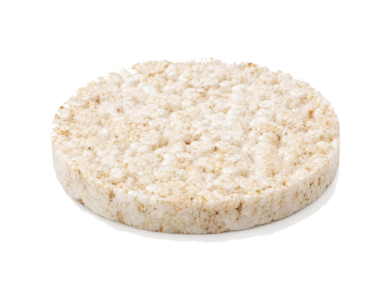

Zboża i kasze
Wafle ryżowe naturalne
Wafle ryżowe naturalne: 8 g białka, 387 kcal, 82 g węglowodanów i 3 g tłuszczu na 100 g. Kategoria: Zboża i kasze.
Kalorie387 kcalna 100 g
Białko / proteiny8 g
Węglowodany82 g
Tłuszcz3 g
Cena (szac.)~3,22 złza 100 g
Ceny zaktualizowano: maj 2026 (szacunek — ceny w popularnych supermarketach)
Porcja: sztuka (9g)
| Kalorie | 35 kcal |
|---|---|
| Białko | 0.7 g |
| Węglowodany | 7.4 g |
| Tłuszcz | 0.3 g |
| Cena (szac.) | ~0,29 zł |
Szczegółowe składniki odżywcze na 100 g
| Wartość energetyczna (kalorie) | 387 kcal |
|---|---|
| Białko (proteiny) | 8 g |
| Węglowodany | 82 g |
| Tłuszcz | 3 g |
| Tłuszcze nasycone | 0.6 g |
| Tłuszcze nienasycone | 2.4 g |
| Witaminy i minerały | Magnez, Tiamina (B1), Żelazo |
| Współczynnik kcal / 1 g białka | 48.4 |
| Cena produktu (szac. za 100 g) | ~3,22 zł |
| Cena za 100 g białka (szac.) | ~40,28 zł |